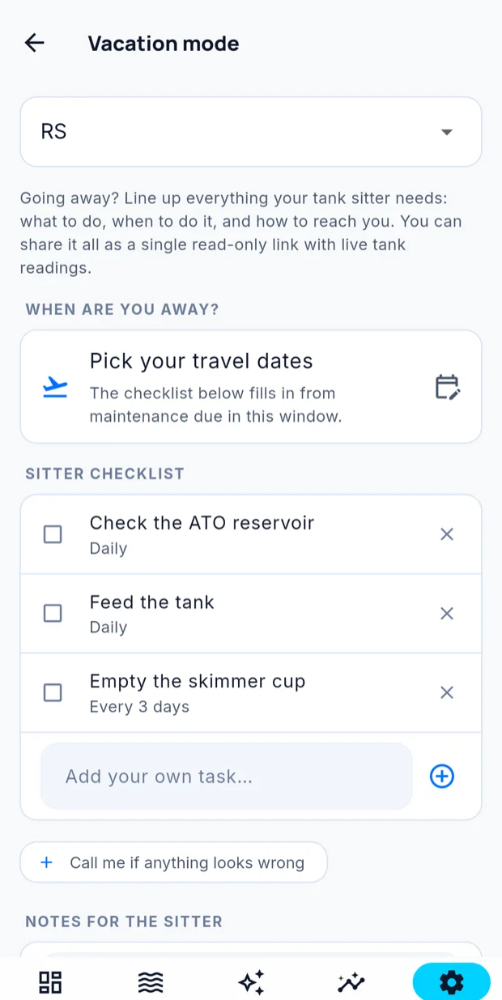

Going away
Vacation mode turns your tank into something another person can look after. You set the dates, list the jobs, and Cora produces a simple page you can send them.
Settings → Tanks → Vacation mode.

Building the plan
Dates — when you leave and when you are back.
A checklist — each job with how often it needs doing. Cora renders the frequency as a plain tag next to it:
| Frequency | For |
|---|---|
| Daily | Feeding, a quick look at the tank |
| Every 3 days | Topping off, checking the skimmer |
| Once | A water change while you are away |
| Always | Standing instructions, such as equipment not to adjust |
Write the checklist for someone unfamiliar with reef tanks. State quantities and methods explicitly — "feed one cube of frozen food, thawed, once a day" rather than "feed as usual".
Sharing it
Cora turns the plan into a read-only page. Send your sitter the link — they do not need the app and they do not need an account.
They can read the checklist and see the tank. They cannot change anything, control equipment, or see the rest of your account.
While you are away
Everything else keeps working — readings, alerts, Reef Buddy, automations. Vacation mode adds the sitter page; it does not change how your tank is run.
If you want to be reachable, check your notification settings before you go.
Coming back
End the plan when you are home. The checklist is kept, so next time you go away you can reuse it rather than writing it again.
Written for Cora Max 0.28.38 and Cora Mobile 0.5.55.
Still stuck? Email cora@coraiq.tech and we'll help.